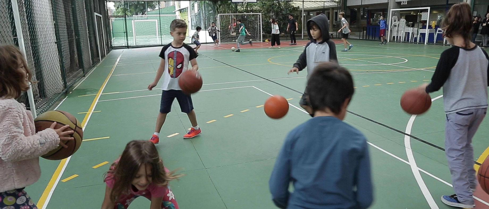
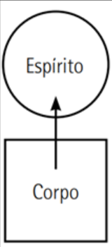
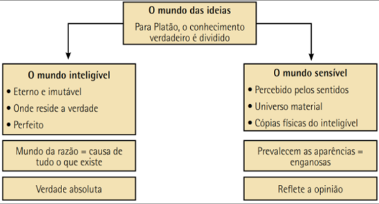
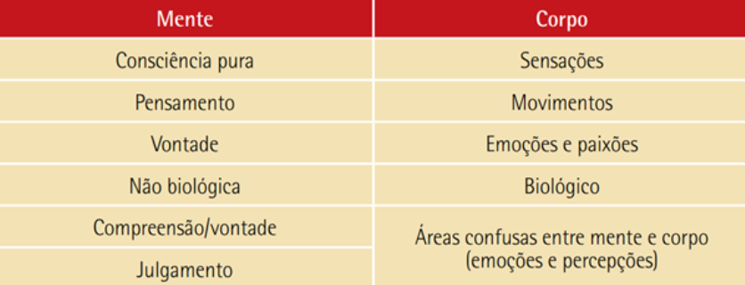

'A Igreja diz: "o corpo é uma culpa". A Ciência diz: "o corpo é uma máquina".
Gastronomia (Dietas e Receitas)
Dieta Exemplo
GANHO DE MASSA |
|---|
| Café da Manhã |
|
| Almoço |
|
| Lanche da Tarde |
|
| Jantar |
|
| Ceia |
|
PERDA DE MASSA |
|---|
| Café da Manhã |
|
| Lanche da Manhã |
|
| Almoço |
|
| Lanche da Tarde |
|
| Jantar |
|
| Ceia |
|
Receita de Pizza Saudável
Ingredientes
Massa
- 1-2 Ovos
- 2-4 colheres de sopa de farinha de trigo
- 1-3 colher de sopa de azeite
- 1-4 colheres de sopa de leite
- 1-5 pitada de sal
- 1-6 gramas/colher de café de fermento
Recheio
- Molho natural de dois tomates
Não fique parado, se liga nas nossas dicas!
Fut Craques
A FUT ESCOLA DE CRAQUES trabalha com crianças e adolescentes de 02 a 15 anos e tem um papel importante no desenvolvimento interpessoal de cada atleta, aplicando técnicas de futebol aliadas ao desenvolvimento motor e social, utilizando métodos didáticos e pedagógicos associados a cada faixa etária de idade.
Além dos Limites do Corpo: A Significância da Corporeidade na Experiência Humana
Autoras: Ana Paula Máximo, Julia de Moura Rosa, Ligia da Costa Silva, Maria Isabela Saito Santos e Sarah Dias Venâncio
O que é?
Corporeidade é aquilo que tem um corpo ou consistência, sendo essa ideia de corpo relacionada aos órgãos e sistemas que formam um ser vivo. Esse conceito é frequentemente usado na área da educação física tendo como referência os movimentos do corpo de uma pessoa. Essas capacidades nos diferem das demais espécies, pois demonstramos nossas expressões facilmente, sendo também responsável por representar o modo de ser de um indivíduo. A noção de corporeidade é construída ao nível social, psicológico e biológico: o sujeito projeta-se para o exterior a partir de seu próprio corpo.
Corporeidade e Educação Física
A corporeidade na Educação Física vai além do simples movimento físico, ela humaniza a experiência, colocando o corpo como ponto central do aprendizado e da expressão. Este conceito abraça a particularidade de cada aluno, reconhecendo suas emoções, histórias e perspectivas individuais. Na educação física, isso se transforma em atividades que não apenas desenvolvem habilidades motoras, mas também criam a autoconsciência e a empatia. Ao entender seus corpos como instrumentos de conhecimento e interação, os indivíduos se tornam participantes ativos na construção de um ambiente melhor, mais inclusivo e sensível. Assim, a corporeidade na Educação Física não apenas fortalece o corpo, mas também a relação entre as pessoas que embarcam em uma jornada de descoberta e crescimento pessoal.

Corporeidade e Grécia Antiga
A corporeidade na Grécia antiga representava um elemento essencial na visão de mundo dos gregos. A beleza, a força e a habilidade física eram altamente valorizadas, o que se reflete em muitos aspectos de sua cultura, desde sua arte até seus esportes e tradições militares. A escultura grega é famosa por sua celebração da forma humana. O corpo humano era frequentemente retratado em poses naturais e realistas, com uma atenção cuidadosa aos detalhes musculares e anatômicos. Isso reflete a importância da aptidão física e da beleza na cultura grega. Nos esportes, a corporeidade era celebrada através dos Jogos Olímpicos, um festival que ocorria a cada quatro anos em honra a Zeus. Os atletas competiam em uma variedade de eventos, como a corrida, o lançamento de disco e a luta, e eram frequentemente retratados nus, em uma celebração da força e da habilidade física. A importância da corporeidade também se refletia nas tradições militares gregas. A formação de falange, por exemplo, exigia uma coordenação física intensa e resistência. A aptidão física era um requisito para a cidadania em algumas cidades-estados, como Esparta, onde os jovens eram submetidos a um rigoroso treinamento físico desde cedo. Portanto, a corporeidade na Grécia antiga estava profundamente enraizada em muitos aspectos de sua cultura e sociedade, sendo um elemento central na maneira como os gregos viam a si mesmos e ao mundo.
Aspectos da Corporeidade
Saúde: Saúde é um estado de completo bem-estar físico, mental e social e não apenas a
ausência de doença ou enfermidade. É um conceito amplo que envolve vários aspectos da vida humana, incluindo
a capacidade de realizar atividades diárias sem restrições ou dor, manter um estado de espírito positivo e
lidar com o estresse de maneira saudável. A saúde também pode ser influenciada por fatores como nutrição
adequada, atividade física regular e acesso a cuidados médicos.
Qualidade de Vida: Qualidade de vida é um termo amplo que engloba diversas dimensões do
bem-estar humano. Inclui aspectos físicos, como saúde e nutrição, bem como aspectos psicológicos, como
satisfação pessoal e realização. Também engloba as condições de vida, como renda, segurança e acesso a
serviços básicos, e aspectos sociais, como relacionamentos e participação na comunidade. Uma boa qualidade
de vida é atingida quando essas várias dimensões estão em equilíbrio.
Aptidão Física: A aptidão física refere-se à capacidade do corpo de funcionar com
eficiência e eficácia em atividades de trabalho e lazer, de ser saudável, de resistir a doenças
hipocinéticas e de responder a emergências.
Atividade Física: A atividade física refere-se a qualquer movimento corporal produzido
pelos músculos esqueléticos que resulta em gasto de energia. Isso inclui exercícios, jogos, dança, esportes
e até tarefas diárias, como limpeza e jardinagem.
Nutrição: Nutrição é o processo pelo qual o corpo humano recebe, processa e utiliza os
nutrientes necessários para a sua sobrevivência e bem-estar. Isso envolve a ingestão de alimentos, a
digestão dos alimentos para extrair nutrientes, a absorção desses nutrientes pelo corpo e a excreção de
resíduos. Uma boa nutrição é essencial para a manutenção da saúde e prevenção de doenças.
Relacionamentos: O conceito de relacionamento se refere à maneira como duas ou mais pessoas
ou coisas estão conectadas ou a maneira como se comportam e lidam uma com a outra. Em termos de interações
humanas, um relacionamento pode ser qualquer tipo de conexão entre duas ou mais pessoas, geralmente
envolvendo algum tipo de interação ou comunicação.
Comportamento Preventivo: O comportamento preventivo é um conjunto de ações que as pessoas
tomam para prevenir doenças ou lesões. Isso pode incluir coisas como se vacinar, usar cinto de segurança,
comer uma dieta saudável, fazer exercícios regularmente e evitar comportamentos de risco, como fumar ou
beber excessivamente.
Filosofia da Corporeidade
O homem, por toda a sua história, apresenta diversas maneiras de entender e tratar seu corpo, que se comporta em determinado contexto social. Os corpos variam suas técnicas, podendo ser elas:
- Aos movimentos das atividades diárias ou às habilidades motoras fundamentais (andar, correr e pular);
- Aos movimentos corporais expressivos (gestos, posturas, expressões faciais), que são formas de expressão não verbais;
- À ética corporal, que contempla as ideias e os sentimentos sobre a aparência do próprio corpo (pudor e ideal de beleza);
- Ao controle de estrutura dos impulsos e das necessidades.
Apesar de serem contextos comuns, podem se diferenciar nas questões de ordenação e interação entre eles e alterar a forma pela qual se manifestam na sociedade conforme características sociais, como sexo, idade, religião, ofício, classe social, dentre outros fatores socioculturais. Para Platão, nosso corpo controla nosso espírito, como é ilustrado na imagem abaixo: 
Seguindo essa lógica, ele afirmava que nosso conhecimento é dividido entre mundo inteligível e mundo sensível.

Assim, o ser humano é composto por duas substâncias: o corpo é a substância, ou a coisa extensa, e a alma é a substância pensante, ou a coisa pensante. Com isso, René Descartes confere ao corpo e à alma uma autonomia completa e independente; apesar de a alma estar inserida no corpo, o pensamento (alma) e a extensão (corpo) não estão ligados. Para ele, fica claro que é o pensamento que controla a extensão, ou seja, o corpo não é capaz de se movimentar, sentir e pensar, mas é movido por algo que lhe é tocado, no caso, o que move o corpo é a alma.
Mais do que apenas o físico
De acordo com a OMS, o estado completo de bem-estar físico mental social e espiritual não é somente a
ausência de enfermidades ou doenças. Os avanços em todas as ciências têm conduzido a uma concepção de saúde
como equilíbrio, uma medida certa de ações do homem que somente levem ao seu bem-estar.
Saúde plena: mens sana in corpore sano (mente saudável em corpo saudável).
O estilo de vida do homem do século XXI "conspira" contra a saúde. Correria, falta tempo acúmulo de atividades. Para muitos, o cotidiano sem dúvida cansativo e esgotante. Além disso existe também os vícios, como fumo, álcool e drogas. Essas substâncias causam efeitos devastadores no corpo e na mente dos usuários. Apesar disso não é difícil ser saudável, necessita apenas de determinação com se próprio, agir pela saúde é manter corpo ativo, alimentar-se de acordo com o que o corpo precisa, controlar peso e a composição corporais, dormir bem, não fumar, não usar drogas... Portanto, mexa-se!
REFERÊNCIAS BIBLIOGRÁFICAS:
- https://portaleventos.uffs.edu.br/index.php/SEPE-UFFS/article/view/6088#:~:text=A%20pesquisa%20em%20andamento%20tem,e%203)%20Esp%C3%ADrito%20(Geist)%3A
- https://conceito.de/corporeidade
- https://www.scielo.br/j/er/a/TZvQfbWjYc757XpyYJrvFLM/
- https://www2.ufjf.br/faefid//files/2010/08/TCC-Lívia-Neves-CORPOREIDADE-UMA-FILOSOFIA-DE-ATUAÇÃO-NA-EDUCAÇÃO-FÍSICA.pdf
- https://adm.online.unip.br/img_ead_dp/74235.pdf
- https://www.unifafibe.com.br/revistasonline/arquivos/hispecielemaonline/sumario/9/19042010071252.pdf
- https://www.scielo.br/j/edur/a/H6PNWRLw3Bt98YzyC6vqqvC/